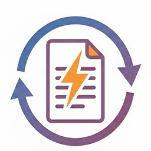

Confirming an order in standard Odoo is just the beginning. You still need to validate the delivery, create the invoice, set the date, and post it — every single time. For businesses processing high volumes of straightforward orders, this is repetitive manual work that adds no value.
Orders Auto Confirm handles everything in one step. Enable it per company and Odoo takes care of the rest automatically — with a built-in stock safety check to make sure nothing ships that isn't available.
Both features are independent — enable one, the other, or both, per company.
Wholesale, distribution, and manufacturing businesses that confirm orders only when stock is ready and want to eliminate the manual loop of validating deliveries and posting invoices on every order.